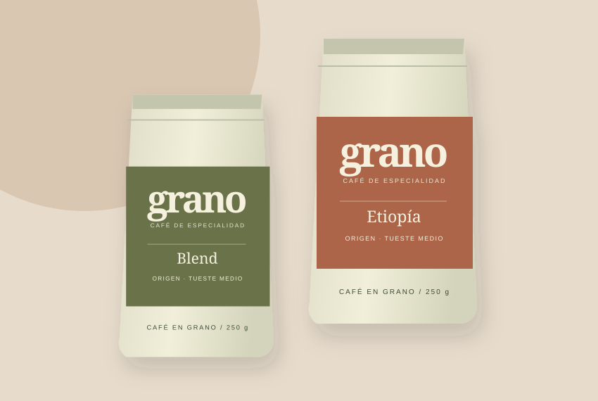

NUESTRA HISTORIA
Somos Grano.

El café como una pausa.
En Grano reunimos cafés de distintos orígenes y accesorios sencillos para quienes disfrutan preparar una taza en casa. Queremos que encontrar tu café favorito sea parte de un momento agradable del día.
Nos gustan los sabores que invitan a probar algo distinto y los métodos fáciles de incorporar a la rutina. Por eso nuestra colección combina café en grano, utensilios de preparación y tazas para acompañar cada pausa.
Conversemos